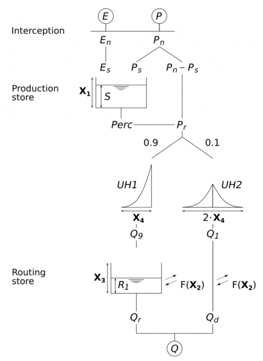
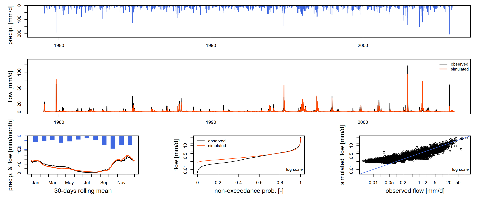
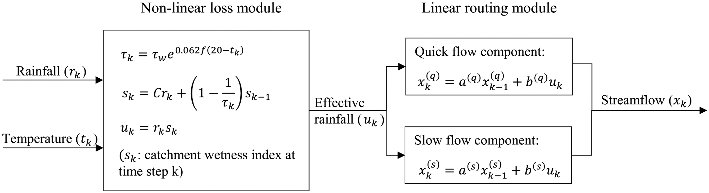
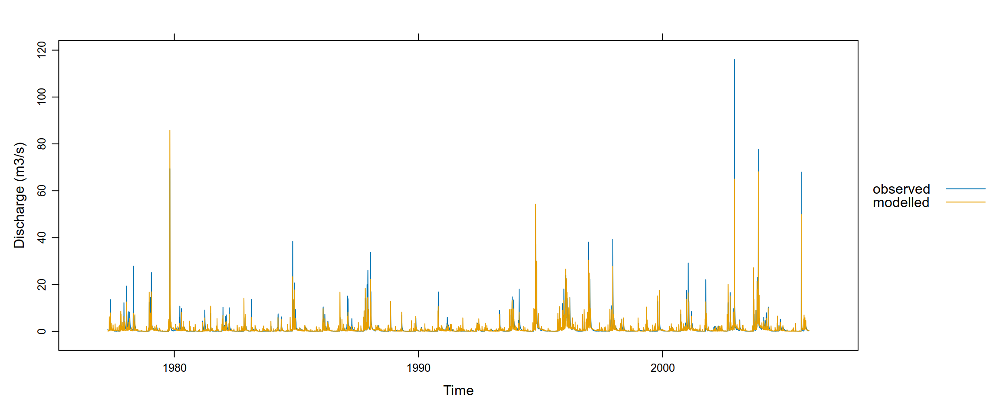

library(airGR)
library(lubridate)Hydrological model calibration over the historical period
1 Load necessary libraries
2 Load preprocessed observational data
As described in the database section, preprocessed datasets can be efficiently reloaded using the readRDS() function. In the code chunk below, we reload the historical hydro-climatic dataset that was previously prepared and exported. This dataset serves as the input for the calibration of the hydrological models in the subsequent steps.
hist_obs = readRDS("output_preprocessed/processed_obsdata_lez.rds")
str(hist_obs)'data.frame': 10592 obs. of 5 variables:
$ Date: Date, format: "1977-01-01" "1977-01-02" ...
$ P : num 2.85 0 0 1.7 6.4 5.95 0 0 0 0 ...
$ T : num 6.84 4.6 3.34 2.95 3.98 ...
$ PET : num 0.75 0.9 1.55 2.25 1 0.7 1.75 2.1 1.2 0.6 ...
$ Q : num 14.56 11.65 7.77 5.82 4.85 ...3 Calibration of the GR4J model
The GR4J (Génie Rural à 4 paramètres Journalier) model is a parsimonious, lumped conceptual rainfall-runoff model widely used in hydrological studies. It represents catchment processes through a production (soil moisture) reservoir, which controls the transformation of precipitation into effective rainfall by accounting for evapotranspiration and soil water storage, and a routing reservoir, which simulates the delayed transfer of water to the outlet (Figure 1). As the name suggests, the model is governed by four parameters: the capacity of the production reservoir (x_1), the groundwater exchange coefficient (x_2), the routing reservoir capacity (x_3), and the time base of the unit hydrograph (x_4). For a detailed description of the model structure and parameterization, readers are referred to Perrin et al. (2003).

To optimize the four parameters of the GR4J model (x_1, x_2, x_3, x_4), we use the Michel calibration algorithm, integrated within the airGR R package (Coron et al., 2017). The Michel algorithm is a gradient-free and iterative local search method which begins by exploring the parameter space using a coarse, predefined grid to identify the most promising region of “good” parameter sets. From the best starting point found in the grid, it performs an iterative local search, adjusting the parameters in directions that maximize an objective function, which measures the goodness-of-fit between observed and simulated discharge. Here we use the the Kling-Gupta Efficiency (KGE; @GUPTA200980) as objective function.
Mathematics of the KGE
The KGE is a decomposition of the Nash-Sutcliffe Efficiency (NSE; @NASH1970282) designed to provide a more balanced assessment of model performance. Unlike the NSE, which can disproportionately emphasize high flows, the KGE jointly accounts for correlation (r), bias (\beta), and variability (\alpha). KGE values range from -∞ to 1, with 1 indicating perfect agreement with observations.
\text{KGE} = 1 - \sqrt{(r-1)^2 + (\alpha-1)^2 + (\beta-1)^2}
where:
- r is the linear correlation between simulated and observed discharge,
- \alpha = \frac{\sigma_s}{\sigma_o} is the ratio of the standard deviations of simulated (\sigma_s) and observed (\sigma_o) series,
- \beta = \frac{\mu_s}{\mu_o} is the ratio of the mean simulated (\mu_s) and observed (\mu_o) discharge.
The steps described above are adapted from the airGR website, which provides a comprehensive overview of the package, detailed descriptions of its functions, and practical tutorials to help users get started with hydrological modeling in R.
Preparing inputs for
airGR Models
To run a hydrological model using the airGR package, the functions require input data and options in specific formats. To simplify this process, the package provides dedicated functions:
CreateInputsModel()– sets up the model inputs such as time series of dates, precipitation, and observed discharge.
CreateRunOptions()– defines model run settings, including warm-up and calibration periods.
CreateInputsCrit()– specifies the efficiency criterion and any transformations of the discharge (e.g., log or square root).
CreateCalibOptions()– configures the calibration algorithm, including which parameters to optimize and predefined values for fixed parameters.
These helper functions ensure that all required inputs are correctly structured for a smooth and error-free model execution.
We first convert the Date column in the POSIXt format required by the airGR ecosystem.
hist_obs$Date = as.POSIXct(hist_obs$Date)
str(hist_obs$Date) POSIXct[1:10592], format: "1977-01-01" "1977-01-02" "1977-01-03" "1977-01-04" "1977-01-05" ...Next, we prepare the input data with the CreateInputsModel()** function.
InputsModel = CreateInputsModel(
FUN_MOD = RunModel_GR4J,
DatesR = hist_obs$Date,
Precip = hist_obs$P,
PotEvap = hist_obs$PET
)
str(InputsModel)List of 3
$ DatesR : POSIXlt[1:10592], format: "1977-01-01" "1977-01-02" ...
$ Precip : num [1:10592] 2.85 0 0 1.7 6.4 5.95 0 0 0 0 ...
$ PotEvap: num [1:10592] 0.75 0.9 1.55 2.25 1 0.7 1.75 2.1 1.2 0.6 ...
- attr(*, "class")= chr [1:3] "InputsModel" "daily" "GR"Before running the GR4J model, we must select the period for which we want to run the model. It is recommended to include a warm-up period of at least one year. This allows the model’s internal reservoirs to reach realistic initial states and helps avoid poor-quality discharge simulations at the beginning of the run caused by inaccurate initialization.
# define two years of warm-up period
ind_WarmUp = seq(
which(hist_obs$Date == min(hist_obs$Date)),
which(hist_obs$Date == hist_obs$Date[2]+years(2))
)
str(ind_WarmUp) int [1:732] 1 2 3 4 5 6 7 8 9 10 ...# run period
ind_Run = seq(
max(ind_WarmUp) + 1,
which(hist_obs$Date == max(hist_obs$Date))
)
str(ind_Run) int [1:9860] 733 734 735 736 737 738 739 740 741 742 ...We can now create the run options using the InputsModel, ind_WarmUp and ind_Run objects as arguments for the CreateRunOptions() function.
RunOptions = CreateRunOptions(
FUN_MOD = RunModel_GR4J,
InputsModel = InputsModel,
IndPeriod_WarmUp = ind_WarmUp,
IndPeriod_Run = ind_Run,
)
str(RunOptions)List of 8
$ IndPeriod_WarmUp: int [1:732] 1 2 3 4 5 6 7 8 9 10 ...
$ IndPeriod_Run : int [1:9860] 733 734 735 736 737 738 739 740 741 742 ...
$ IniStates : num [1:67] 0 0 0 0 0 0 0 0 0 0 ...
$ IniResLevels : num [1:4] 0.3 0.5 NA NA
$ Outputs_Cal : chr [1:2] "Qsim" "Param"
$ Outputs_Sim : Named chr [1:22] "DatesR" "PotEvap" "Precip" "Prod" ...
..- attr(*, "names")= chr [1:22] "" "GR1" "GR2" "GR3" ...
$ FortranOutputs :List of 2
..$ GR: chr [1:18] "PotEvap" "Precip" "Prod" "Pn" ...
..$ CN: NULL
$ FeatFUN_MOD :List of 12
..$ CodeMod : chr "GR4J"
..$ NameMod : chr "GR4J"
..$ NbParam : int 4
..$ TimeUnit : chr "daily"
..$ Id : logi NA
..$ Class : chr [1:2] "daily" "GR"
..$ Pkg : chr "airGR"
..$ NameFunMod : chr "RunModel_GR4J"
..$ TimeStep : num 86400
..$ TimeStepMean: int 86400
..$ CodeModHydro: chr "GR4J"
..$ IsSD : logi FALSE
- attr(*, "class")= chr [1:3] "RunOptions" "daily" "GR"Next, we use the CreateInputsCrit() function that gathers all the data and information required to compute the calibration criterion.
InputsCrit = CreateInputsCrit(
# the name of the error criterion functions:
#* ErrorCrit_RMSE(): Root mean square error (RMSE)
#* ErrorCrit_NSE(): Nash-Sutcliffe model efficiency coefficient (NSE)
#* ErrorCrit_KGE(): Kling-Gupta efficiency criterion (KGE)
#* ErrorCrit_KGE2(): modified Kling-Gupta efficiency criterion (KGE’)
FUN_CRIT = ErrorCrit_KGE,
#* the inputs of the hydrological model previously prepared by the
#* CreateInputsModel() function
InputsModel = InputsModel,
#* the options of the hydrological model previously prepared by the
#* CreateRunOptions() function
RunOptions = RunOptions,
# the name of the considered variable (by default "Q" for the discharge)
VarObs = "Q",
# observed variable time serie (e.g. the discharge expressed in mm/time step)
Obs = hist_obs$Q[ind_Run]
)
str(InputsCrit)List of 8
$ FUN_CRIT:function (InputsCrit, OutputsModel, warnings = TRUE, verbose = TRUE)
..- attr(*, "class")= chr [1:2] "FUN_CRIT" "function"
$ Obs : num [1:9860] 0.849 1.277 1.796 2.582 2.776 ...
$ VarObs : chr "Q"
$ BoolCrit: logi [1:9860] TRUE TRUE TRUE TRUE TRUE TRUE ...
$ idLayer : logi NA
$ transfo : chr ""
$ epsilon : NULL
$ Weights : NULL
- attr(*, "class")= chr [1:2] "Single" "InputsCrit"Before using the automatic calibration tool, we must prepare the calibration options using the CreateCalibOptions() function.
CalibOptions = CreateCalibOptions(
FUN_MOD = RunModel_GR4J, # the name of the model function
FUN_CALIB = Calibration_Michel # the name of the calibration algorithm
)
str(CalibOptions)List of 4
$ FixedParam : logi [1:4] NA NA NA NA
$ SearchRanges : num [1:2, 1:4] 4.59e-05 2.18e+04 -1.09e+04 1.09e+04 4.59e-05 ...
$ FUN_TRANSFO :function (ParamIn, Direction)
$ StartParamDistrib: num [1:3, 1:4] 169.017 247.151 432.681 -2.376 -0.649 ...
- attr(*, "class")= chr [1:4] "CalibOptions" "daily" "GR" "HBAN"Now we are ready to perform calibration of the GR4J model using the Calibration_Michel() function.
OutputsCalib = Calibration_Michel(
#* the inputs of the hydrological model previously prepared by the
#* CreateInputsModel() function
InputsModel = InputsModel,
#* the options of the hydrological model previously prepared by the
#* CreateRunOptions() function
RunOptions = RunOptions,
#* the options of the hydrological model previously prepared by the
#* CreateInputsCrit() function
InputsCrit = InputsCrit,
#* the options of the hydrological calibration model previously prepared by
#* the CreateCalibOptions() function
CalibOptions = CalibOptions,
#* Le modèle à utiliser
FUN_MOD = RunModel_GR4J
)Grid-Screening in progress (0% 20% 40% 60% 80% 100%)
Screening completed (81 runs)
Param = 247.151, -0.020, 83.096, 1.417
Crit. KGE[Q] = 0.7813
Steepest-descent local search in progress
Calibration completed (19 iterations, 219 runs)
Param = 247.151, 1.319, 116.746, 1.203
Crit. KGE[Q] = 0.8754The Calibration_Michel() function returns a vector containing the optimized parameters of the GR4J model. We can extract these values for subsequent use in model simulations and analysis.
gr4j_params = OutputsCalib$ParamFinalR
kge = OutputsCalib$CritFinal Calibration summary
X1: 247.1511
X2: 1.319029
X1: 116.7459
X2: 1.202703
------------------------------
KGE: 0.88
==============================Finally, we can vizualize the results of the GR4J model calibration. The airGR package offers the possibility to make use of the plot() function.
OutputsModel = RunModel_GR4J(
InputsModel = InputsModel,
RunOptions = RunOptions,
Param = gr4j_params
)
plot(OutputsModel, Qobs = hist_obs$Q[ind_Run])
As in the data preprocessing stage, the calibrated GR4J model is reused in the subsequent sections. Working directly with the optimized parameters ensures methodological consistency, avoids unnecessary recalibration, and provides a reliable baseline for subsequent analyses and simulations.
# Create an output directory if it doesn't exist
if (!dir.exists("output_modelcalibration")) dir.create("output_modelcalibration")
# Export using saveRDS
saveRDS(gr4j_params, file="output_modelcalibration/fittedGR4J_lez.rds")4 Further Analysis: Calibration of the IHACRES Model
While the GR4J model is used for the remainder of the practical, further analysis may include the calibration of the IHACRES model. IHACRES stands for Identification of unit Hydrographs And Component flows from Rainfall, Evaporation and Streamflow data. The IHACRES model is a lumped conceptual rainfall-runoff model which architecture is divided into two fundamental modules (Figure 3). The non-linear loss module converts observed rainfall into effective rainfall by accounting for antecedent moisture conditions through a catchment wetness index, controlled by a small set of parameters governing catchment drying and rainfall–runoff efficiency, typically influenced by temperature or potential evapotranspiration (Figure 3). The linear routing module then transforms this effective rainfall into discharge using linear reservoirs whose parameters control the response time and relative contribution of quick flow (surface or near-surface runoff) and slow flow (groundwater contribution or baseflow). For a detailed description of the model structure and parameterization, readers are referred to Jakeman & Hornberger (1993).

In R, the most common and robust way to use the IHACRES model is through the hydromad package. It is specifically designed for conceptual rainfall-runoff modeling and allows to handle both the non-linear loss and linear routing modules separately or as a combined model.
The model requires a time-series object (zoo or xts) containing Rainfall (P), Temperature (T) or Potential Evapotranspiration (E), and observed Discharge (Q).
library(hydromad)
# Convert data into a zoo object
hist_obs$Date = as.Date(hist_obs$Date)
ts_data = with(
hist_obs,
zoo(cbind(P = P, E = PET, Q = Q), order.by = Date)
)
head(ts_data) P E Q
1977-01-01 2.85 0.75 14.561798
1977-01-02 0.00 0.90 11.649438
1977-01-03 0.00 1.55 7.766292
1977-01-04 1.70 2.25 5.824719
1977-01-05 6.40 1.00 4.853933
1977-01-06 5.95 0.70 3.994787Next, we define the IHACRES model structure by specifying the two modules. In the chunk below, we use the CWI (Catchment Wetness Index) for the loss module and expuh (Exponential Unit Hydrograph) for the routing.
# Define the model structure
# sma: Soil Moisture Accounting (Non-linear Loss)
# routing: Linear Routing (Quick and Slow flow)
ihacres = hydromad(ts_data,
sma = "cwi",
routing = "expuh",
# Set parameter bounds (example)
tau_q = c(0.1, 2), # Quick flow time constant
tau_s = c(10, 100), # Slow flow time constant
v_s = c(0, 1)) # Relative volume of slow flowTo calibrate the parameters of the IHACRES model, we will use the Shuffled Complex Evolution (SCE) global optimizer. The SCE algorithm, developed at the University of Arizona (Duan et al., 1994), is a global optimization strategy specifically designed to efficiently explore high-dimensional and complex parameter spaces where multiple local optima may exist. It is worth noting that the IHACRES model involves up to nine (9) parameters to be optimized (cf. Kim (2015)). We first define a robust KGE objective function for hydromad.
kge_fun = function(Q, X, ...)
{
# Remove missing values to prevent cor/sd returning NA
ok = complete.cases(Q, X)
if (sum(ok) < 2) return(NA)
Q = Q[ok]
X = X[ok]
r = cor(X, Q) # correlation
alpha = sd(X) / sd(Q) # variability ratio
beta = mean(X) / mean(Q) # bias ratio
# Calculate KGE
val = 1 - sqrt((r - 1)^2 + (alpha - 1)^2 + (beta - 1)^2)
val
}
Note on calibration time
Calibration of the IHACRES model using the SCE algorithm algorithm can be computationally intensive. Depending on the length of the time serie and the computer’s processing power, this step may take several minutes to complete. Please be patient and avoid interrupting the process. For testing purposes, the control list (e.g., maxit, ncomplex) can be adjusted to reduce runtime.
# Run calibration using the SCE algorithm and KGE as obj. function
fit_ihacres = fitBySCE(
ihacres,
objective = kge_fun,
# Run SCE with only 5 iterations (very short, just for testing)
# Use 2 complexes in the population (again, very minimal).
control = list(maxit = 5, ncomplex = 2)
)Warning in fitBySCE(ihacres, objective = kge_fun, control = list(maxit = 5, :
Maximum number of function evaluations or iterations reached.# Summary of calibrated parameters
summary(fit_ihacres)
Call:
hydromad(DATA = ts_data, tau_q = 1.99921, tau_s = 57.9451, v_s = 0.291405,
sma = "cwi", routing = "expuh", tw = 20.772, f = 0.401522,
scale = 0.00324525)
Time steps: 10492 (0 missing).
Runoff ratio (Q/P): (1.03 / 2.393) = 0.4303
rel bias: -5.61e-08
r squared: 0.6475
r sq sqrt: 0.6108
r sq log: 0.528
For definitions see ?hydromad.stats#Extract the KGE value
kge_val = objFunVal(fit_ihacres, objective = kge_fun)
cat("IHACRES calibration KGE:", kge_val)IHACRES calibration KGE: 0.8204751Unlike the airGR package, which provides a dedicated built-in plotting function for visualizing model calibration results, thehydromad package does not include an equivalent comprehensive graphical output. Consequently, we limit the graphical assessment to a direct comparison between observed and simulated discharge time series, which nonetheless provides a clear and informative evaluation of model performance (Figure 4).
library(lattice)
library(latticeExtra)
xyplot(fit_ihacres,
with.standard = TRUE,
xlab = "Time",
ylab = "Discharge (m3/s)")
As for the GR4J model, we can save the calibrated IHACRES model for future use.
saveRDS(fit_ihacres, file="output_modelcalibration/fittedIHACRES_lez.rds")5 References
Coron, L., Thirel, G., Delaigue, O., Perrin, C., & Andréassian, V. (2017). The suite of lumped GR hydrological models in an r package. Environmental Modelling & Software, 94, 166–171. https://doi.org/https://doi.org/10.1016/j.envsoft.2017.05.002
Duan, Q., Sorooshian, S., & Gupta, V. K. (1994). Optimal use of the SCE-UA global optimization method for calibrating watershed models. Journal of Hydrology, 158(3), 265–284. https://doi.org/https://doi.org/10.1016/0022-1694(94)90057-4
Jakeman, A. J., & Hornberger, G. M. (1993). How much complexity is warranted in a rainfall-runoff model? Water Resources Research, 29(8), 2637–2649. https://doi.org/https://doi.org/10.1029/93WR00877
Kim, H. S. (2015). Application of a baseflow filter for evaluating model structure suitability of the IHACRES CMD. Journal of Hydrology, 521, 543–555. https://doi.org/https://doi.org/10.1016/j.jhydrol.2014.12.030
Perrin, C., Michel, C., & Andréassian, V. (2003). Improvement of a parsimonious model for streamflow simulation. Journal of Hydrology, 279(1), 275–289. https://doi.org/https://doi.org/10.1016/S0022-1694(03)00225-7
Zhao, B., Mao, J., Dai, Q., Han, D., Dai, H., & Rong, G. (2019). Exploration on hydrological model calibration by considering the hydro-meteorological variability. Hydrology Research, 51(1), 30–46.